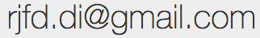

About Me
Contact:

Research areas:
Concurrent and distributed systems, consistency, transactional memory, distributed transactions, program static analysis
Short Bio
Ricardo Dias received his doctoral degree from the Universidade Nova de Lisboa, Portugal, in 2013, under the supervision of Prof. João Lourenço, on the topic of transactional memory. He spent a couple of years as a postdoc researcher, working with Prof. Rodrigo Rodrigues on the topic of geo-replicated storage systems, first at the NOVAsys group of the NOVA LINCS laboratory, and then at the GSD group of the INESC-ID laboratory.
He is currently working as a senior software enginner, at SUSE Linux, in the Entreprise Storage Team, where his main task is to contribute to the upstream Ceph storage system project. He is also an Associate Researcher at the NOVA LINCS laboratory, where he still colaborates in several research projects, and co-supervises Tiago Vale's PhD studies with Prof. João Lourenço.
In 2010, he spent three months as a visiting PhD student at the theory group in the Queen Mary, University of London, hosted by professor Dino Distefano. He has received a Distinguished Paper Award in Euro-Par 2012 and the Best paper Award at HVC 2012.
Academic Degrees
- 2013
PhD in Informatics by the Universidade Nova de
Lisboa, and under the supervision of professor
João Lourenço
Thesis: Maintaining the Correctness of Transactional Memory Applications - 2008
MSc in Informatics by the Universidade Nova de
Lisboa, and under the supervision of professor
João Lourenço
Thesis: Cooperative Memory and Database Transactions - 2007 BSc in Informatics Engineering by the Faculdade de Ciências e Tecnologia of the Universidade Nova de Lisboa